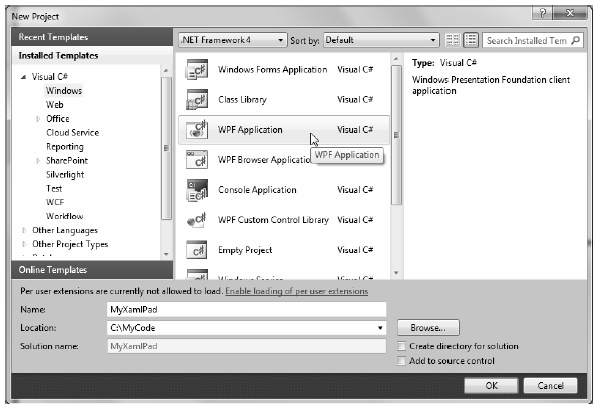
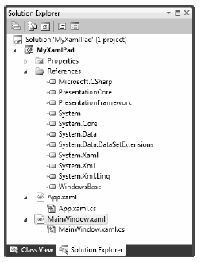
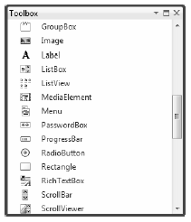
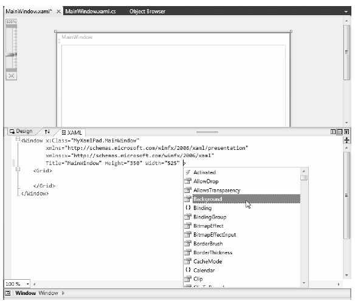
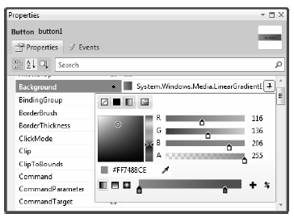
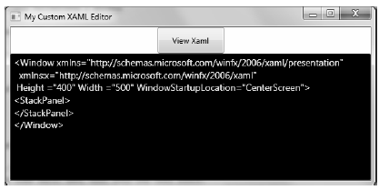
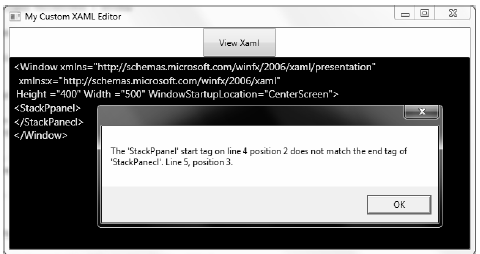
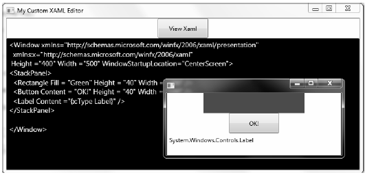

Over the course of this chapter you created examples using no-frills text editors, the command-line compiler, and kaxaml.exe. The reason for doing so, of course, was to focus on the core syntax of WPF applications without getting distracted by the bells and whistles of a graphical designer. Now that you have seen how to build WPF applications in the raw, let’s examine how Visual Studio 2010 can simplify the construction of WPF applications.
Note While Visual Studio 2010 does have some support for authoring complex XAML using the integrated designers, Expression Blend is a far better alternative to build the UI of your WPF applications. You will begin to examine Expression Blend in Chapter 28.
The New Project dialog box of Visual Studio 2010 defines a set of WPF project workspaces, all of which are contained under the Window node of the Visual C# root. Here, you can choose from a WPF Application, WPF User Control Library, WPF Custom Control Library, and WPF Browser Application (i.e., XBAP). To begin, create a new WPF Application named MyXamlPad (Figure 27-16).
Figure 27-16 The WPF project templates of Visual Studio 2010
Beyond setting references to each of the WPF assemblies (PresentationCore.dll, PresentationFramework.dll, and WindowsBase.dll), you will also be provided with initial Window and Application derived classes, making use of code files and a related XAML file. Consider Figure 27-17, which shows the Solution Explorer for this new WPF project.
Figure 27-17 The initial files of a WPF Application project
Visual Studio 2010 provides a Toolbox (which you can open via the View menu) that contains numerous WPF controls (Figure 27-18).
Figure 27-18 The Toolbox contains the WPF controls that can be placed on the designer surface
Using a standard mouse drag and drop, you can place any of these controls onto the Window's designer surface. As you do, the underlying XAML will be authored on your behalf. However, you can also manually type in your markup using the integrated XAML editor. As you can see in Figure 29-19, you do get IntelliSense support, which can help simplify the authoring of the markup.
Figure 27-19 The WPF Window designer
Note You can reposition the display panes of the visual designer using the buttons embedded within the splitter window, such as the Swap Panes button (indicated by the up/down arrows), the Horizontal and Vertical split buttons, and so on. Take a moment to find a configuration you are comfortable with.
Once you have placed controls onto your designer (which you will do in a moment), you can then make use of the Properties window to set property values for the selected control, as well as rig up event handlers for the selected control. By way of a simple test, drag a button control anywhere on your visual designer. Once you do, you will see that Visual Studio authored XAML similar to the following:
<Button Content="Button" Height="23" HorizontalAlignment="Left" Margin="12,12,0,0" Name="button1" VerticalAlignment="Top" Width="75" />
Now, use the Properties window to change the Background color of the Button using the integrated brush editor (Figure 27-20).
Note The Brush Editor of Expression Blend is very similar to the Visual Studio brush editor and will be examined in detail in Chapter 29.
Figure 27-20 The Properties window can be used to configure the UI of a WPF control
Once you have finished tinkering with the brush editor, check out the generated markup. It might look something like this:
<Button Content="Button" Height="23" HorizontalAlignment="Left" Margin="12,12,0,0" Name="button1" VerticalAlignment="Top" Width="75"> <Button.Background> <LinearGradientBrush EndPoint="1,0.5" StartPoint="0,0.5"> <GradientStop Color="#FF7488CE" Offset="0" /> <GradientStop Color="#FFC11E1E" Offset="0.837" /> </LinearGradientBrush> </Button.Background> </Button>
If you wish to handle events for a given control, you can also make use of the Properties window, but this time you need to click on the Events tab. Ensure that the button is selected on your designer, click on the Events tab, and locate the Click event. Once you do, double click directly on the Click event entry. This will cause Visual Studio 2010 to automatically build an event handler that takes the form:
NameOfControl_NameOfEvent
Since you did not rename your button, the Properties window shows it generated an event handler named button1_Click (see Figure 27-21).
Figure 27-20 Handling events using the visual designer
As well, Visual Studio 2010 generated the corresponding C# code in your window's code file. Here, you can add any sort of code that must execute when the button is clicked:
public partial class MainWindow : Window { public MainWindow() { InitializeComponent(); } private void button1_Click(object sender, RoutedEventArgs e) { } }
You can also handle events directly in the XAML editor. By way of an example, place your mouse within the <Button> element and type in the MouseEnter event, followed by the equals sign. Once you do, you will see Visual Studio displays any compatible handlers in your code file, as well as the <New Event Handler> option. If you double click <New Event Handler>, the IDE will generate a fitting handler in your C# code file.
Now that you have seen the basic tools used within Visual Studio 2010 to create WPF applications, let’s leverage this IDE to build an example program that illustrates the process of parsing XAML at runtime.
Before you start, completely delete the markup describing the Button you just created and also delete the C# event handler code.
The WPF API supports the ability to load, parse, and save XAML descriptions programmatically. Doing so can be quite useful in a variety of situations. For example, assume you have five different XAML files that describe the look and feel of a Window type. As long as the names of each control (and any necessary event handlers) are identical within each file, it would be possible to dynamically apply “skins” to the window (perhaps based on a startup argument passed into the application).
Interacting with XAML at runtime revolves around the XamlReader and XamlWriter types, both of which are defined within the System.Windows.Markup namespace. To illustrate how to programmatically hydrate a Window object from an external *.xaml file, you will build an application that mimics the basic functionality of the kaxaml.
While your application will certainly not be as feature-rich as kaxaml.exe, it will provide the ability to enter XAML markup, view the results, and save the XAML to an external file. To begin, update the initial XAML definition of your <Window> as:
Note The next chapter will dive into the details of working with controls and panels, so don’t fret over the details of the control declarations.
<Window x:Class="MyXamlPad.MainWindow" xmlns="http://schemas.microsoft.com/winfx/2006/xaml/presentation" xmlns:x="http://schemas.microsoft.com/winfx/2006/xaml" Title="My Custom XAML Editor" Height="338" Width="1041" Loaded="Window_Loaded" Closed="Window_Closed" WindowStartupLocation="CenterScreen"> <!-- You will use a DockPanel, not a Grid --> <DockPanel LastChildFill="True" > <!-- This button will launch a window with defined XAML --> <Button DockPanel.Dock="Top" Name = "btnViewXaml" Width="100" Height="40" Content ="View Xaml" Click="btnViewXaml_Click" /> <!-- This will be the area to type within --> <TextBox AcceptsReturn ="True" Name ="txtXamlData" FontSize ="14" Background="Black" Foreground="Yellow" BorderBrush ="Blue" VerticalScrollBarVisibility="Auto" AcceptsTab="True"/> </DockPanel> </Window>
First of all, notice that you have replaced the initial <Grid> with a <DockPanel> type that contains a Button (named btnViewXaml) and a TextBox (named txtXamlData), and that the Click event of the Button type has been handled. Also notice that the Loaded and Closed events of the Window itself have been handled within the opening <Window> element. If you have used the designer to handle your events, you should find the following code in your MainWindow.xaml.cs file:
public partial class MainWindow : Window { public MainWindow() { InitializeComponent(); } private void btnViewXaml_Click(object sender, RoutedEventArgs e) { } private void Window_Closed(object sender, EventArgs e) { } private void Window_Loaded(object sender, RoutedEventArgs e) { } }
Before continuing, be sure to import the following namespaces into your MainWindow.xaml.cs fMainWindow.xaml.cs file:
using System.IO; using System.Windows.Markup;
The Loaded event of your main window is in charge of determining if there is currently a file named YourXaml.xaml in the folder containing the application. If this file does exist, you will read in the data and place it into the TextBox on the main window. If not, you will fill the TextBox with an initial default XAML description of an empty window (this description is the exact same markup as an initial window definition, except that you are using a <StackPanel> rather than a <Grid>).
Note The string you are building to represent the key XML namespaces is a bit cumbersome to type, given the escape characters required for the embedded quotations, so type carefully.
private void Window_Loaded(object sender, RoutedEventArgs e) { // When the main window of the app loads, // place some basic XAML text into the text block. if (File.Exists(System.Environment.CurrentDirectory + "\\YourXaml.xaml")) { txtXamlData.Text = File.ReadAllText("YourXaml.xaml"); } else { txtXamlData.Text = "<Window xmlns=\"http://schemas.microsoft.com/winfx/2006/xaml/presentation\"\n" +"xmlns:x=\"http://schemas.microsoft.com/winfx/2006/xaml\"\n" +"Height =\"400\" Width =\"500\" WindowStartupLocation=\"CenterScreen\">\n" +"<StackPanel>\n" +"</StackPanel>\n" +"</Window>"; } }
Using this approach, your application will be able to load the XAML entered in a previous session or supply a default block of markup if necessary. At this point, you should be able to run your program and find the display shown in Figure 27-22 within the TextBox type.
Figure 27-22 The first run of MyXamlPad.exe
When you click the Button, you will first save the current data in the TextBox into the YourXaml.xaml file. At this point, you will read in the persisted data via File.Open() to obtain a Stream-derived type. This is necessary, as the XamlReader.Load() method requires a Stream-derived type (rather than a simple System.String) to represent the XAML to be parsed.
Once you have loaded the XAML description of the <Window> you wish to construct, create an instance of System.Windows.Window based on the in-memory XAML and display the Window as a modal dialog:
private void btnViewXaml_Click(object sender, RoutedEventArgs e) { // Write out the data in the text block to a local *.xaml file. File.WriteAllText("YourXaml.xaml", txtXamlData.Text); // This is the window that will be dynamically XAML-ed. Window myWindow = null; // Open local *.xaml file. try { using (Stream sr = File.Open("YourXaml.xaml", FileMode.Open)) { // Connect the XAML to the Window object. myWindow = (Window)XamlReader.Load(sr); // Show window as a dialog and clean up. myWindow.ShowDialog(); myWindow.Close(); myWindow = null; } } catch (Exception ex) { MessageBox.Show(ex.Message); } }
Note that you are wrapping much of our logic within a try/catch block. In this way, if the YourXaml.xaml file contains ill-formed markup, you can see the error of your ways within the resulting message box. For example, run your program, and purposely misspell <StackPanel> by adding an extra letter P in the opening element or whatnot. If you click the button, you will see an error similar to Figure 27-23:
Figure 27-23 Catching markup errors
Finally, the Closed event of your Window type will ensure that the latest and greatest data in the TextBox is persisted to the YourXaml.xaml file:
private void Window_Closed(object sender, EventArgs e) { // Write out the data in the text block to a local *.xaml file. File.WriteAllText("YourXaml.xaml", txtXamlData.Text); }
Now fire up your program and enter some XAML into your text area. Do be aware that (like kaxaml.exe) this program does not allow you to specify any code generation–centric XAML attributes (such as Class or any event handlers). As a test, enter the following XAML within your <Window> scope:
<StackPanel> <Rectangle Fill = "Green" Height = "40" Width = "200" /> <Button Content = "OK!" Height = "40" Width = "100" /> <Label Content ="{x:Type Label}" /> </StackPanel>
Once you click the button, you will see a window appear that renders your XAML definitions (or possibly you’ll see a parsing error in the message box—watch your typing!). Figure 27-24 shows possible output.
Figure 27-24 MyXamlPad.exe in action
Great! I am sure you can think of many possible enhancements to this application, but to do so you need to be aware of how to work with WPF controls and the panels that contain them. You will do so starting in the next chapter.